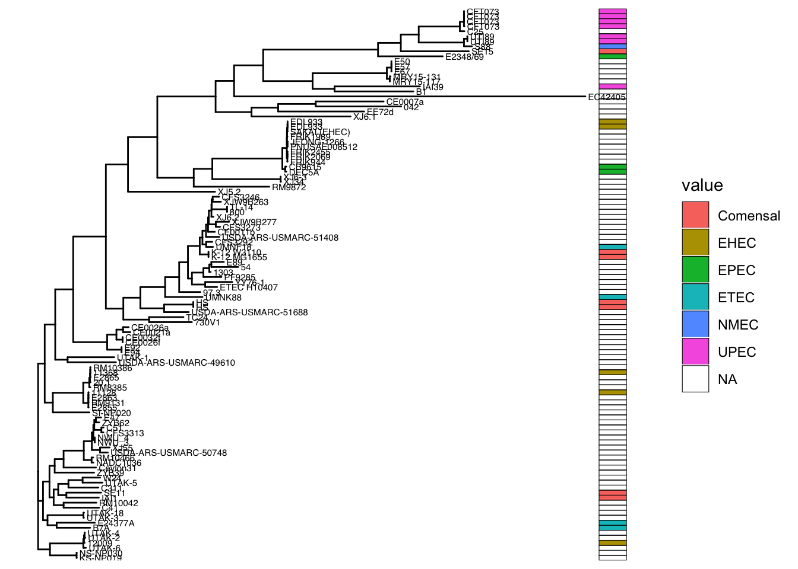

Chapter 5 Adding Heatmaps
We will use these libraries
And load our tree and our clade metadata
# Tree
tr<-read.tree("data/example_2_phylo.nwk")
# Metadata
design <- read_tsv("data/Experiment_Design_example_2.tsv")
# keeping only the relevant columns
design<-design %>% select(Assembly.Accession,Strain,
Phylogroup,Patotype,Geographic.location,source)
#Make design must follow same order than tree tips
#In this case: same order of Assembly Accessions GCF_0020201...
design <- design %>%
filter(Assembly.Accession %in% tr$tip.label) %>%
arrange(match(Assembly.Accession, tr$tip.label))Use design to create a data frame with heatmap data. The rownames must of this data frame must be the tree tip labels (Assembly Accessions in this case)
heat_data <- data.frame(Patotype = as.factor(design$Patotype))
rownames(heat_data) <-design$Assembly.AccessionCreate a ggtree object and add the metadata
Now we can use gheatmap to plot a tree with heatmap
